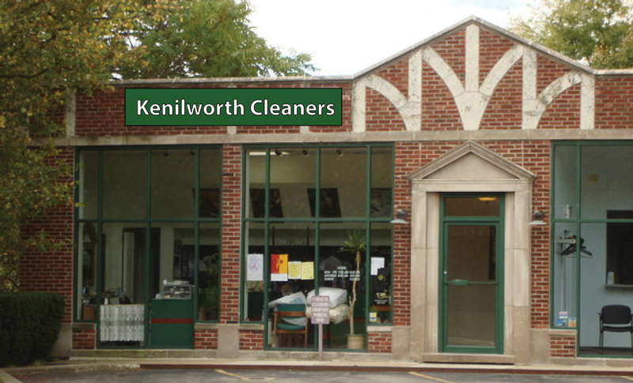

Kenilworth Cleaners Logo
As a graphic design exercise, I designed a new storefront logo for Kenilworth Cleaners. Click through the slideshow to see my process:
This is the current storefront logo.
First, I explored various options.
More options.
This is the design I settled on.
Creating it in Adobe Illustrator.
Exploring fonts.

When picking a color, I chose to match the accents of the store.
Seeing how all the fonts look in green.
I settled on this serif font. Professional and classy.
I tried it with green instead of black strokes.
It doesn't work on the storefront with two lines.
The final design.
How the logo would look on the store.